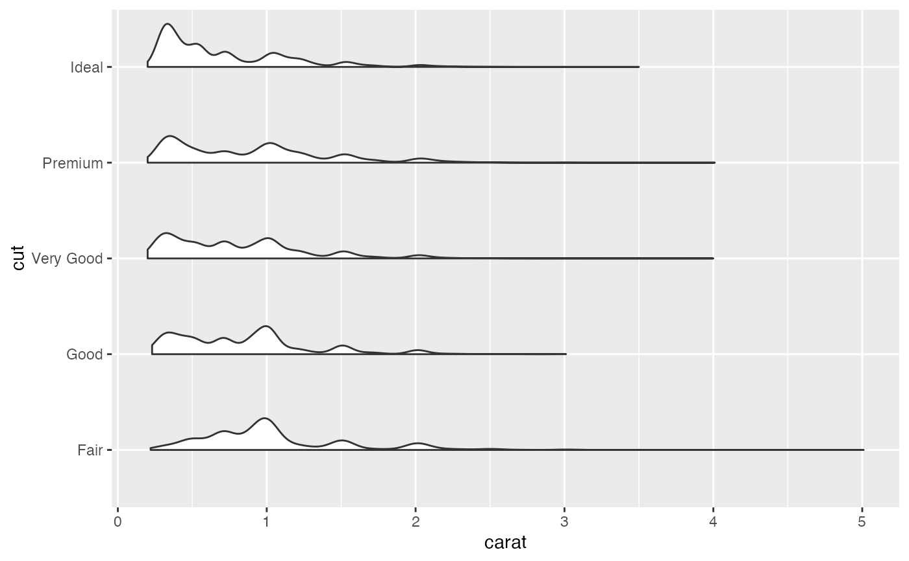

ggplot Flat Violin
Usage
geom_flat_violin(
mapping = NULL,
data = NULL,
stat = "ydensity",
position = "dodge",
trim = TRUE,
scale = "area",
show.legend = NA,
inherit.aes = TRUE,
...
)Details
Copy-pasted from https://gist.githubusercontent.com/benmarwick/2a1bb0133ff568cbe28d/raw/fb53bd97121f7f9ce947837ef1a4c65a73bffb3f/geom_flat_violin.R somewhat hackish solution to: https://twitter.com/EamonCaddigan/status/646759751242620928 based mostly on copy/pasting from ggplot2 geom_violin source: https://github.com/hadley/ggplot2/blob/master/R/geom-violin.r The original seems to be: sourced from: https://gist.github.com/dgrtwo/eb7750e74997891d7c20, Author is David Robinson. A key internal function for the raincloud plots used as a plotting option in this package. For information on raincloud plots see: Allen, M., Poggiali, D., Whitaker, K., Marshall, T. R., & Kievit, R. A. (2019). Raincloud plots: a multi-platform tool for robust data visualization. Wellcome open research, 4, 63. doi:10.12688/wellcomeopenres.15191.1
Examples
ggplot(diamonds, aes(cut, carat)) +
geom_flat_violin() +
coord_flip()
#> Warning: Using the `size` aesthetic with geom_polygon was deprecated in ggplot2 3.4.0.
#> ℹ Please use the `linewidth` aesthetic instead.
